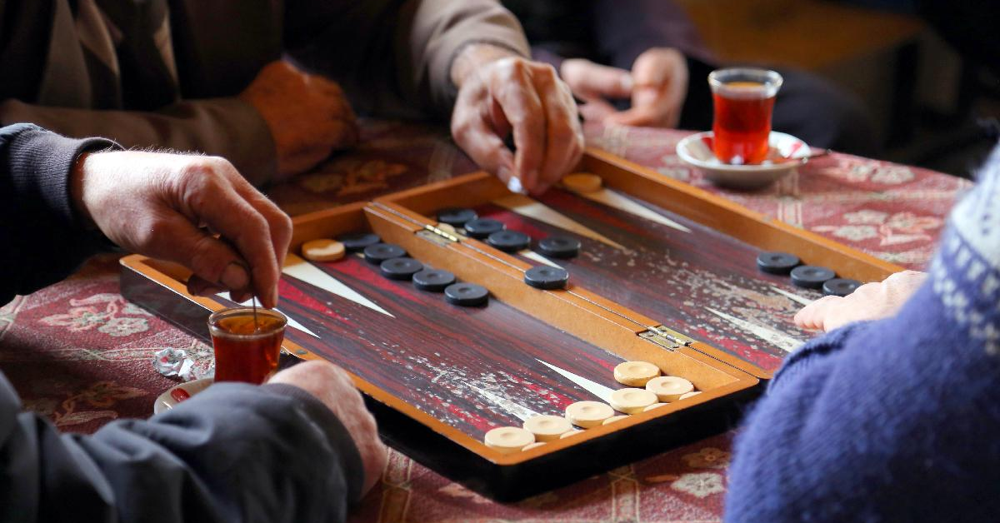
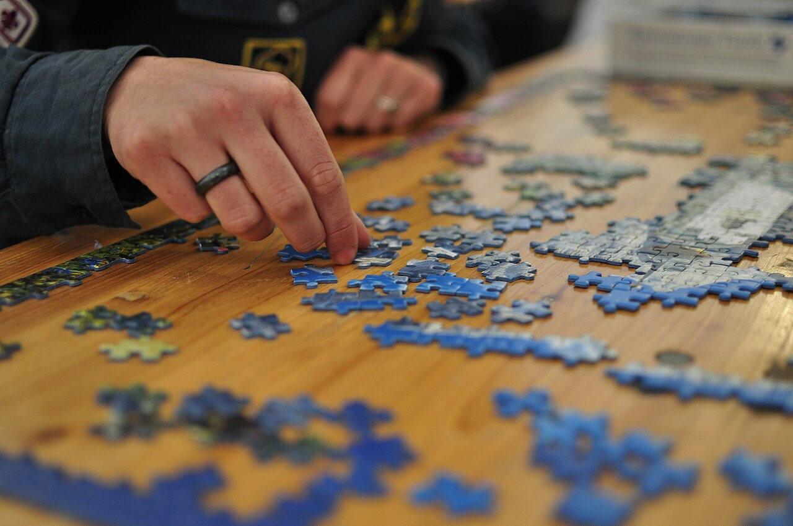
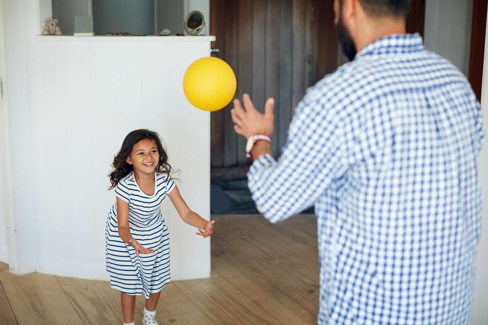
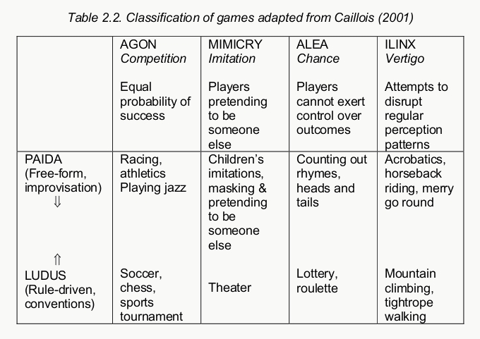
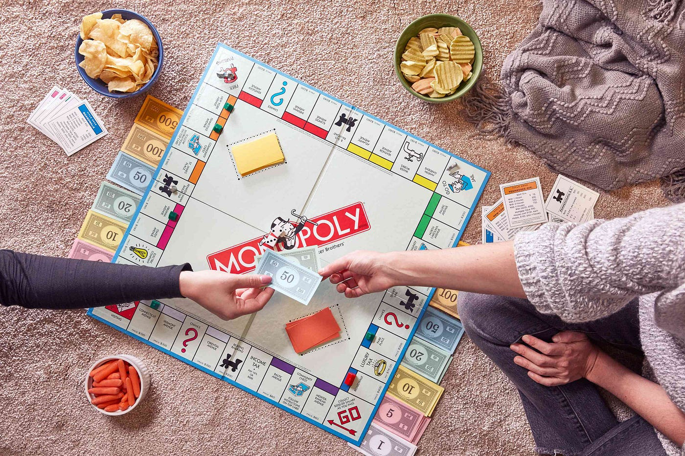
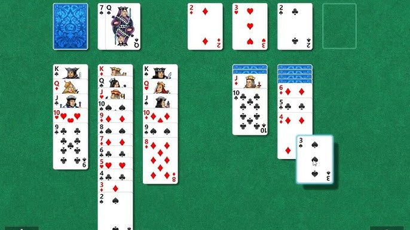
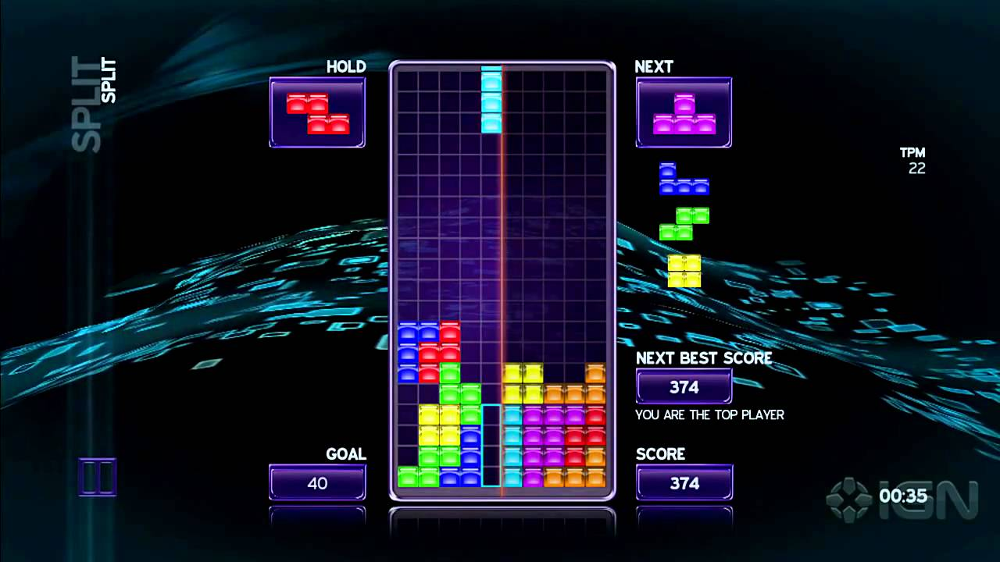

Video Game Studies
PLAY
/GAME




Why “game” resists definition
“Consider, for example, the activities that we call ‘games’. I mean board-games, card-games, ball-games, athletic games, and so on. What is common to them all? – Don’t say: ‘They must have something in common, or they would not be called “games”’ – but look and see whether there is anything common to all. – For if you look at them, you won’t see something that is common to all, but similarities, affinities, and a whole series of them at that. (§66)”
— Ludwig Wittgenstein, Philosophical Investigations (1953)
“… All play moves and has it’s being within a play-ground marked off beforehand either materially or ideally, deliberately or as a matter of course. Just as there is no formal difference between play and ritual, so the ‘consecrated spot’ cannot be formally distinguished from the play-ground. The arena, the card table, the magic circle, the temple, the stage, the screen, the tennis court, the court of justice, etc, are all in form and function play-grounds, i.e. forbidden spots, isolated, hedged round, hallowed, within which special rules obtain. All are temporary worlds within the ordinary world, dedicated to the performance of an act apart…”
— Johan Huizinga, Homo Ludens (1938)
The formalist answer
rules, obstacles, artificial conflict
“After examining different possibilities, I am proposing a division into four main rubrics, depending upon whether, in the games under consideration, the role of competition, chance, simulation, or vertigo is dominant. I call these agon, alea, mimicry, and ilinx, respectively.”
— Roger Caillois, Man, Play and Games (1958)

“Playing a game is the voluntary attempt to overcome unnecessary obstacles.”
— Bernard Suits, The Grasshopper: Games, Life and Utopia (1978)
“A game is a system in which players engage in an artificial conflict, defined by rules, that results in a quantifiable outcome.”
— Katie Salen & Eric Zimmerman, Rules of Play (2003)
“A game is a system in which players engage in an artificial conflict, defined by rules, that results in a quantifiable outcome.”
— Katie Salen & Eric Zimmerman, Rules of Play (2003)


